CSV file from Kaggle
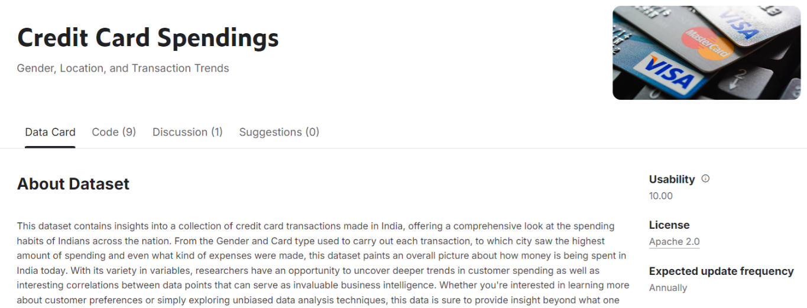Download the csv file from Kaggle. it contains data regarding credit card transactions of random people from india
Power BI

I used Power BI to visualize the data
How to make the app
Step 1 - Launch Power BI
Open Power BI and Select Blank Report
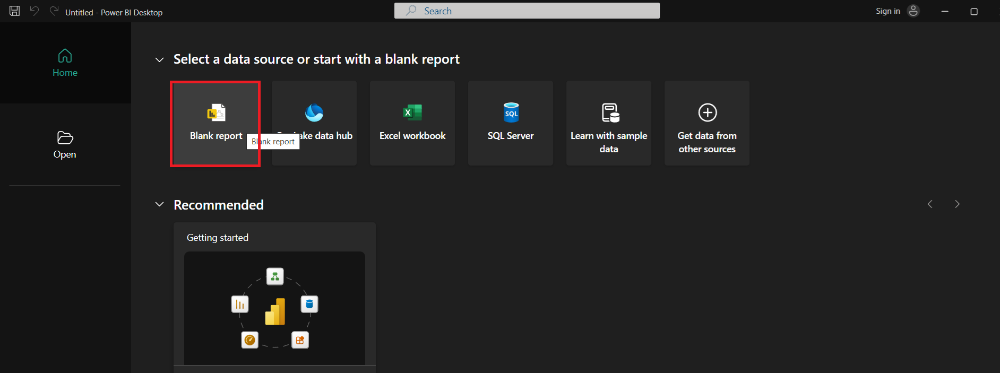Step 2 - Select Data
Select Text/CSV
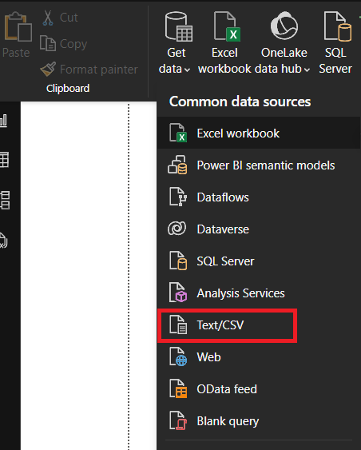Step 3 - Select File
Select the downloaded CSV file
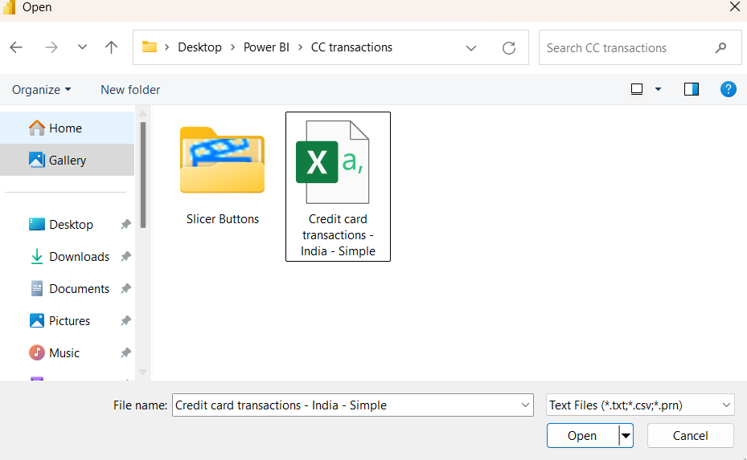Step 4 - Transform Data
Select Transform Data. So you can drop unwanted columns
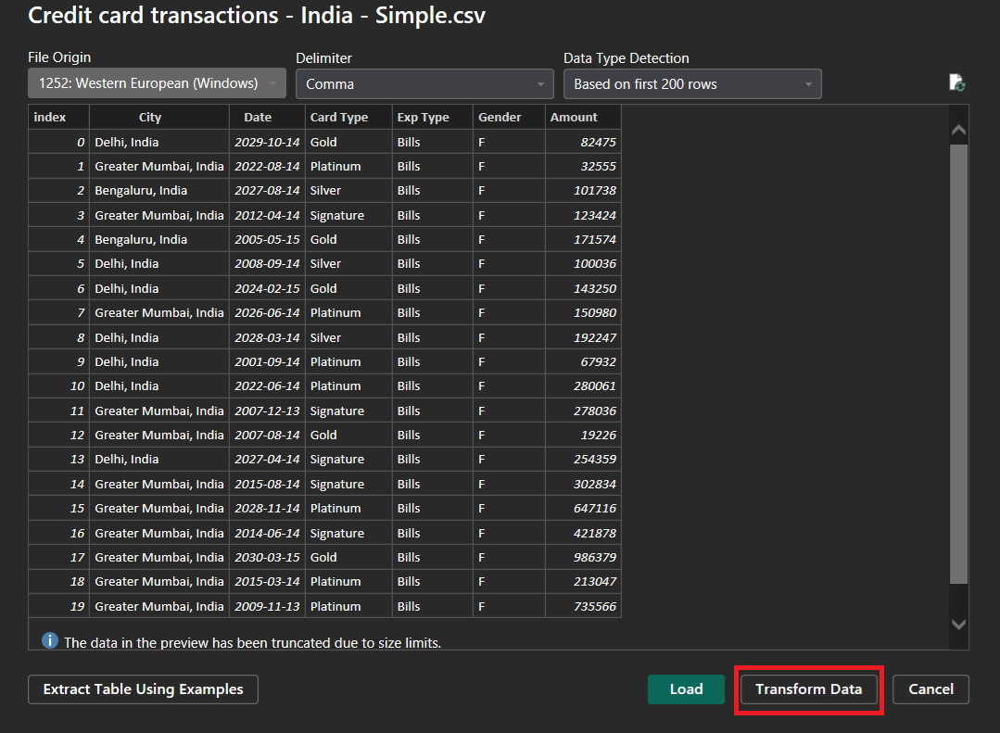Step 5 - Data Cleaning
I dropped index column and Gender column. since i dont plan on using them
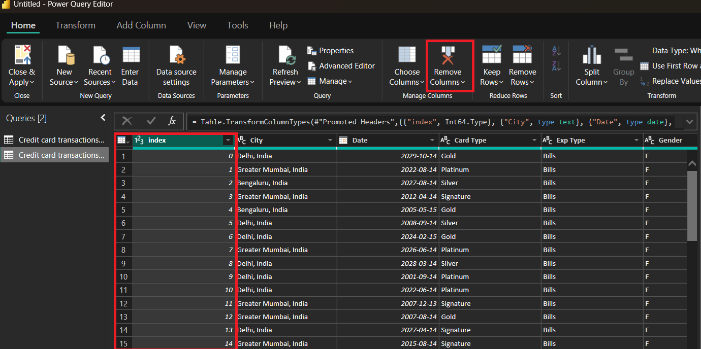Step 5.1 - Data Tab
This is How my Data Tab looks like
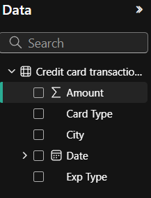Step 6
Make the calculated tables, Right click the credit card transaction model then select new column
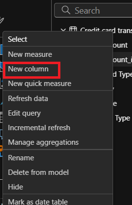Step 6.1
Here are the calculated tables i created, Created Month and Year Column since i plan to use them as filters. The switch statements helps to specify the month. Lastly, the amount are in rupee so i converted them to canadian dollar
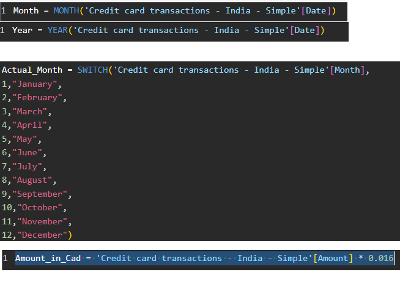Step 7
Generate two Slicers one for month and one for year.
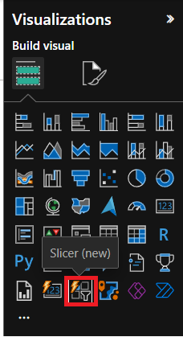Step 8
Generate a Bar Char for visualization
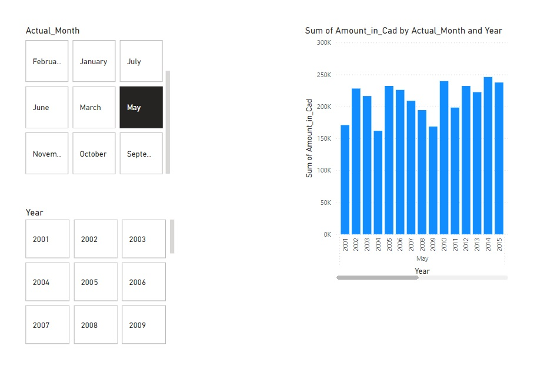Step 9 - Customize
Here is my customized Power BI app
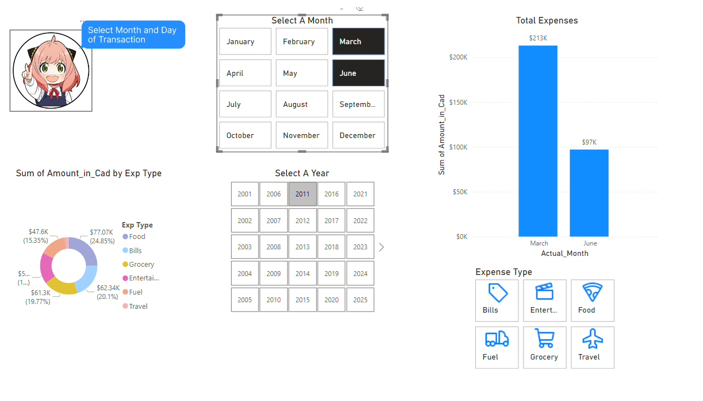